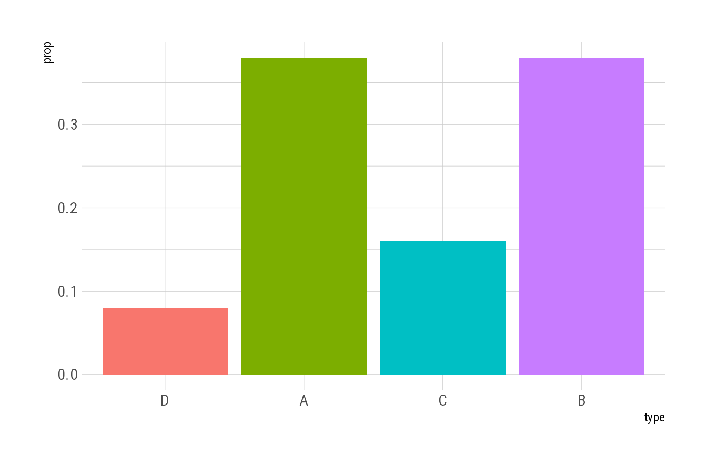
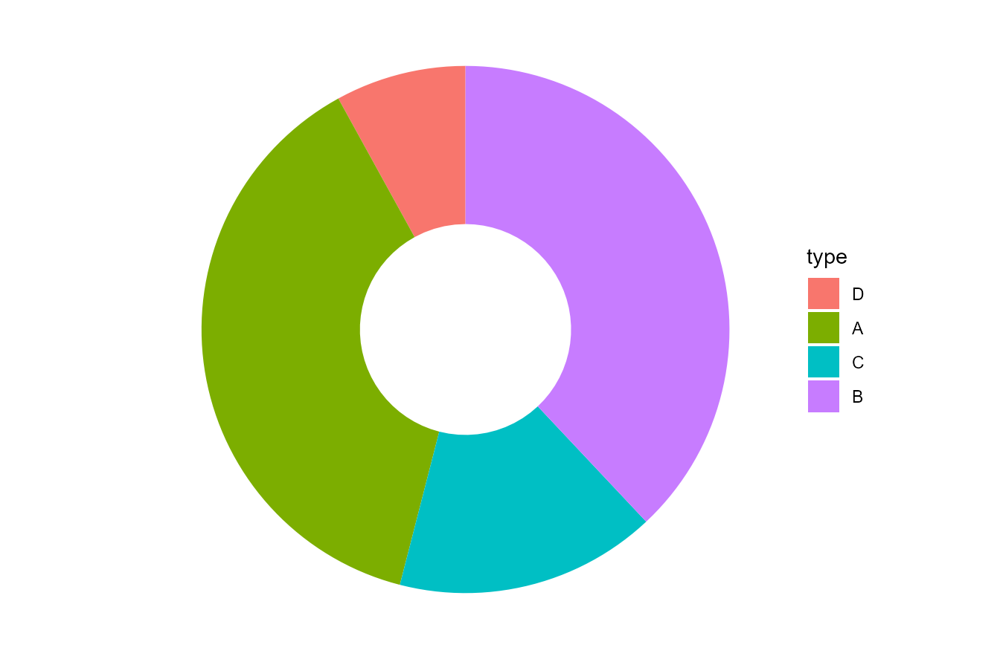
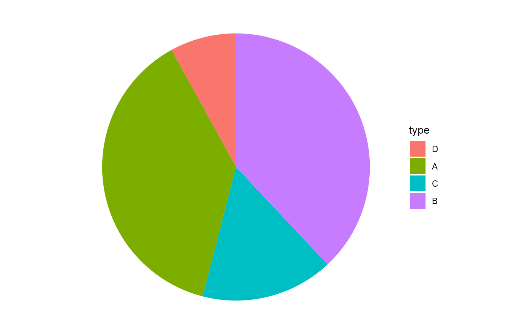
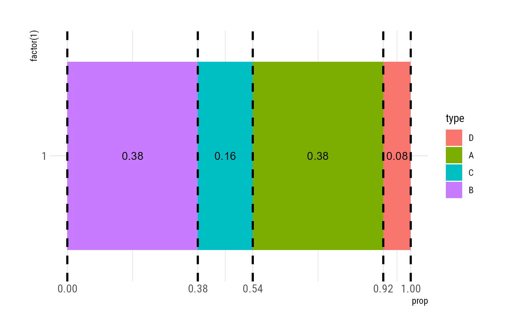
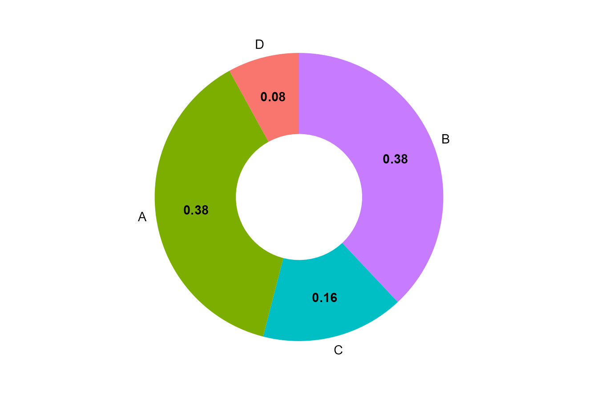

library(tidyverse)
theme_set(hrbrthemes::theme_ipsum_rc())
dt <- tibble(
type = sample(c("A", "B", "C", "D"), size = 100, replace = TRUE, prob = c(0.3, 0.4, 0.2, 0.1))
) %>%
# 设置因子的排序
mutate(type = factor(type, c("D", "A", "C", "B"))) %>%
count(type) %>%
mutate(prop = n / sum(n))甜甜圈图和扇形图常用来刻画各部分在整体中的占比，ggplot2的coord_radial绘制甜甜圈图非常方便。甜甜圈图中是通过角度来表示大小，而人眼不擅长比较角度的大小。从下面可以清楚的看出这一点：
dt %>%
ggplot(aes(x = type, y = prop, fill = type)) +
geom_col(show.legend = FALSE)
dt %>%
ggplot(aes(y = factor(1), x = prop, fill = type)) +
geom_col() +
coord_radial(expand = FALSE, inner.radius = 0.4) +
theme_void()


Figure 1 (a) 中可以从柱子的高度中看出A所占的比重大于B，Figure 1 (b) 中则很难看出A和B谁占的比重大。
所以甜甜圈图和扇形图需要加上注释，表明各部分的占比，加注释需要提供注释的位置，一般大家都希望把注释放在扇形的中间，怎么确定每个扇形中间的位置呢？先了解以下coord_radial()的原理。
p <- dt %>%
ggplot(aes(y = factor(1), x = prop, fill = type)) +
geom_col() +
theme_void()
p
p +
coord_radial(theta = "x",
expand = FALSE)

coord_radial就是将某条坐标轴卷起来，将 Figure 2 (a) 沿着x轴卷起来就得到了 Figure 2 (b) 。
所以要确定扇形中间的位置，只需要确定 Figure 2 (a) 中每个颜色区间的中点，而颜色区间的中点等于该颜色区间两个端点相加除以二，所以我们只需要确定每个颜色区间端点的位置。

区间的端点由每种因子所占的比重依次相加得到，而注释的横坐标就是区间的中点。
dt_plot <- dt %>%
# 先按因子变量将数据倒序排列，因为ggplot默认倒序
arrange(desc(type)) %>%
mutate(
# 将占比依次相加得到区间端点
cum_prop = cumsum(prop),
# 计算区间的中点
mid = slider::slide_dbl(cum_prop, mean, .before = 1, .complete = TRUE),
mid = if_else(is.na(mid), cum_prop/2, mid)
)
dt_plot# A tibble: 4 × 5
type n prop cum_prop mid
<fct> <int> <dbl> <dbl> <dbl>
1 B 38 0.38 0.38 0.19
2 C 16 0.16 0.54 0.46
3 A 38 0.38 0.92 0.73
4 D 8 0.08 1 0.96最后将注释放在区间的中点即可。
dt_plot %>%
ggplot(aes(y = factor(1), x = prop, fill = type)) +
geom_col(show.legend = FALSE) +
geom_text(aes(label = prop, x = mid, y = 1), fontface = "bold") +
geom_text(aes(x = mid, y = 1.6, label = type)) +
scale_x_continuous(breaks = c(0, dt_plot$cum_prop)) +
coord_radial(expand = FALSE, inner.radius = 0.4) +
theme_void()